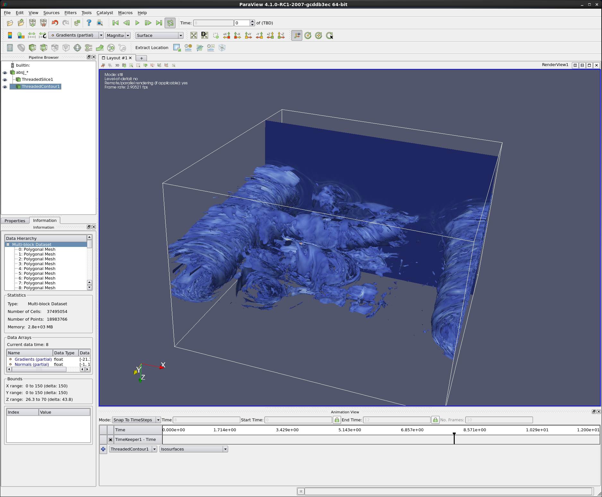
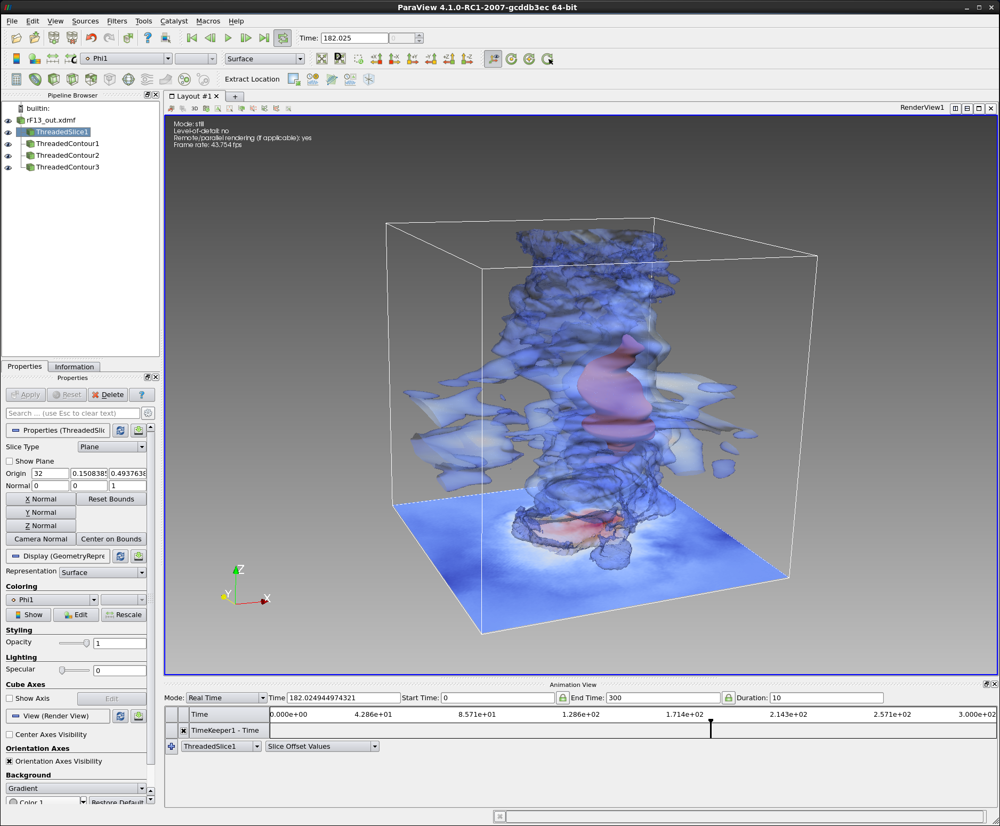

Paraview and OpenSWR
Here are a couple of examples using OpenSWR as the backend renderer for Paraview.
These visualizations were achieved using unmodified Paraview 4.1 on a Core™ i7-4790 workstation with 32GB of memory.
|

Magnetic Reconnection time series animation can be found here.
|
"Daughton Magnetic Reconnection" IsoSurface
- Iso-surface of the 10243 Daughton Magnetic Reconnection volume data set, generated with ParaView, and rendered using OpenSWR.
- Generated iso-surface contains 20M and 85M triangles (depending on time slice).
Model used with permission from Bill Daughton (LANL) and Berk Geveci (KitWare). For more information on this simulation, please read this paper.
|
|

Plasma Cyclone time series animation can be found here.
|
"Wendell Plasma Cyclone" IsoSurface
- Iso-surfaces of the 2573 Wendell Horton rF13 Plasma Vortex volume data set, generated with ParaView, and rendered using OpenSWR.
Model used with permission from Wendell Horton, Anne Bowen, and Greg Foss at Texas Advanced Computing Center. For more information about Dr. Horton's fascinating plasma studies, please visit: A Deep Dive Into Plasma
|
{kind=link}
{kind=link}